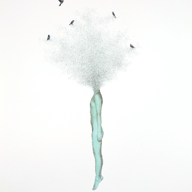

Keun Young ParkDream, Eden #3Micro-collage, torn and pasted photo on paper43" x 33"2012
Intelligence # 8 red wine on paper 30" x 22" 2014
Intelligence #3 red wine on paper 30" x 22" 2013- 2014
Grow red wine on paper 40 pieces each 7" x 5" 2012
Grow #12 red wine on paper 30" x 22" 2012-2014
Grow #3 red wine on paper 30" x 22" 2011
Grow #13 red wine on paper 30" x 22" 2012
